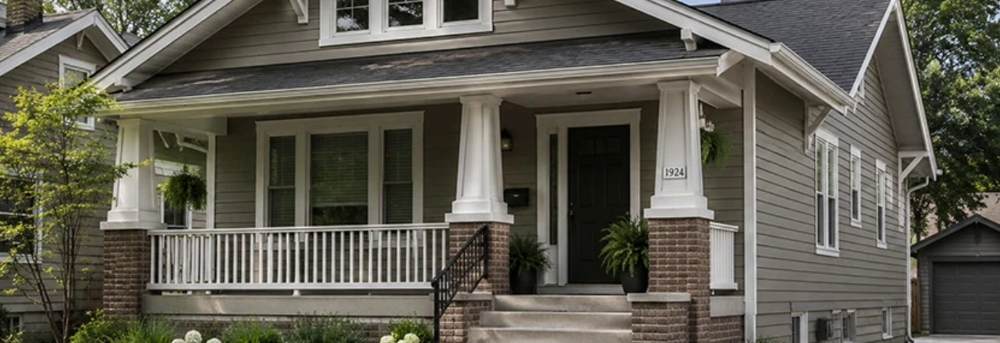

Composite Siding Installers
In Greater HoustonComposite siding gives Houston homeowners an engineered exterior with durable profiles, dimensional finishes and flexible design choices. We handle composite siding repair and full replacement. Get your free composite siding estimate today!
Get A Siding EstimateComposite Siding Repair In Greater Houston
Localized impact damage, loose sections or isolated deterioration can often be repaired without replacing your entire exterior. We inspect the affected composite siding and the surrounding details before recommending a targeted repair or a broader replacement.
Composite Siding Replacement In Greater Houston
If deterioration affects multiple walls or you’re ready to change your exterior’s material and look, we plan a full composite siding replacement. We help you compare profiles and finish options, then install the new siding as one coordinated exterior system.

Composite Siding Styles
Benefits Of Composite Siding
Composite Siding Financing In Greater Houston
Composite siding can carry a higher upfront cost than some exterior materials, so financing helps you plan the replacement around a workable budget. We offer flexible financing options with terms based on qualification.
How Much Does Composite Siding Cost In Greater Houston?
A full composite siding replacement on an average-sized Greater Houston home typically costs $33,750 – $84,375, depending on home size, stories and the profile you choose. Use our siding cost calculator for an instant estimate.
Siding Financing